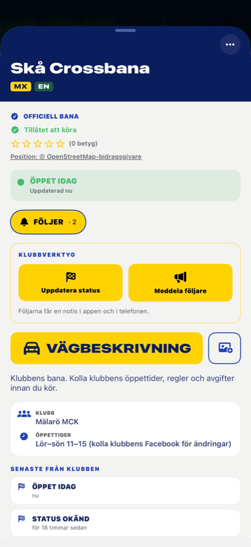
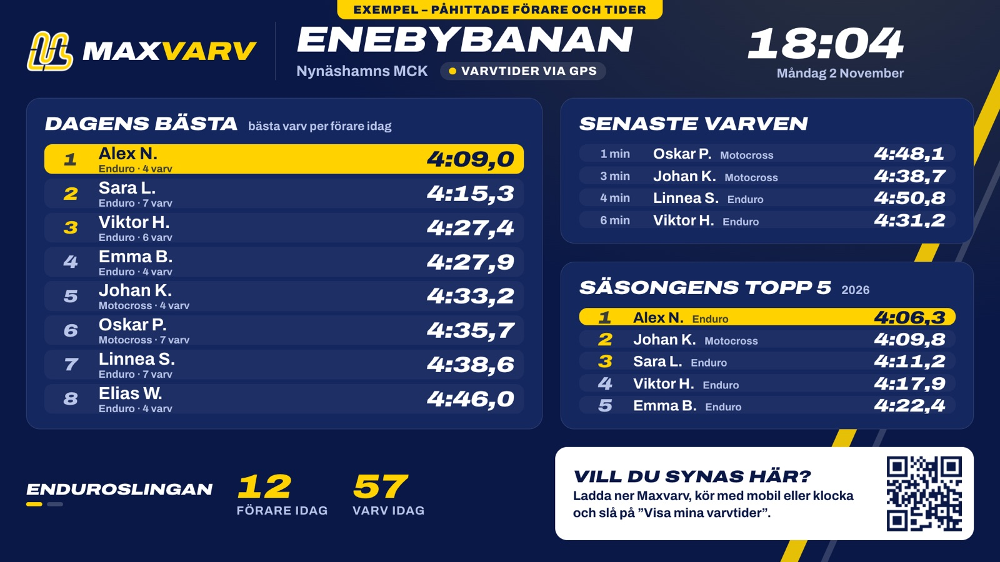

Varvtider på er bana – utan transpondrar.
Klubben sätter ut en start/mål-linje på kartan i Maxvarv. Sedan räknas varven av sig själva när förarna kör – med mobilen i fickan eller klockan på armen. Tiderna syns i appen, på banans sida och på en TV i klubbstugan.
Gratis att komma igång för klubbar

Klubbstugeskärmen – exempel med påhittade förare. Öppna den på valfri TV eller dator med webbläsare.
Så fungerar det
Sätt ut start/mål
Klubbens admin öppnar banan i appen och flyttar kartan så att krysset hamnar på linjen. Klart på ett par minuter. Flera spår per bana går bra: crossbana, endurorunda och knattebana var för sig.
Förarna kör
Med Maxvarv i mobilen eller på klockan – Apple Watch, Wear OS och Garmin. Ingen extra utrustning, inget att hyra ut eller samla in.
Tiderna kommer in
När passet laddats upp räknas varven fram ur GPS-spåret – samma regler för alla. Föraren ser sina tider direkt, och topplistan uppdateras.
Visa i stugan
Klubbstugeskärmen visar dagens bästa, de senaste varven och säsongens topp 5. Den uppdaterar sig själv – sätt den på en TV och låt den stå.
Bra för
- Träningskvällar – förarna ser hur de förbättras från gång till gång
- Klubbtävlingar, knattecup och "varvjakt" utan transponderutrustning
- Enduroslingor – även långa varv (upp till 90 minuter)
- Engagemang i klubbstugan – och nya medlemmar som vill synas på listan
Bra att veta
- GPS-tid, inte transpondertid – passar träning och klubbtävlingar, inte officiella Svemo-tävlingar
- Tiderna dyker upp när föraren laddat upp passet – oftast inom några minuter efter körningen
- Bara förare som själva slagit på "Visa mina varvtider" syns, med förnamn och första bokstaven i efternamnet
- Fungerar på iPhone och Android – utan konto för den som bara tittar på skärmen
Vanliga frågor
Hur exakt är det?
Varvet räknas när föraren passerar inom 20 meter från linjen, och tiden räknas fram mellan GPS-punkterna. Det ger en noggrannhet på ungefär en sekund – tillräckligt för att jämföra varv och köra klubbtävlingar.
Måste alla ha klocka?
Nej. Mobilen i fickan räcker. Klocka är ett plus för den som vill se varvet på handleden under tiden.
Vad behöver klubben?
En admin för banan i Maxvarv (tryck "Är du från klubben?" på er bana i appen) – och en TV eller skärm med webbläsare om ni vill visa tiderna i stugan.
Kan vi använda det tillsammans med GoBraap?
Ja. Maxvarv ersätter inget av det ni gör i GoBraap – det lägger till varvtider och skärmen i klubbstugan.
Vill ni testa på er bana?
Mejla oss med klubbens namn och banan – så hjälper vi er sätta ut start/mål och får igång skärmen.